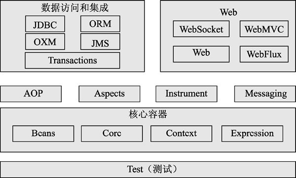

首页 > 编程笔记
Spring框架介绍（非常详细）
回顾笔者这几年的 Java Web 开发经历，最初使用 Servlet 与 JSP 技术进行开发，后来使用 SSH 架构进行开发，再后来使用 Spring MVC 架构进行开发，如今使用流行的 Spring Boot 架构进行开发。
在 Java Web 开发领域，Spring 的发展速度大大超出预期，已经成为每个 Java 编程人员必须掌握的框架。Spring 框架以其灵活、简易、快速等特性迅速抢占了Java企业级开发的市场，成为世界上最流行的企业级开发架构。
Spring 发展到今天，已经不仅仅指 Spring Framework，而且还代表 Spring 的整个家族。Spring 可以为 Java 企业级开发提供强有力的支持，其庞大而活跃的社区及持续开源的代码贡献，为各大公司的应用服务提供了基础支撑。
在 Java 领域也有这么一位天才，他就是悉尼大学的音乐学博士，而且他还是 Spring Framework 的创始人，他的名字叫 Rod Johnson。
2002 年 Rod Johnson 编写了 Expert one-on-one J2EE Development without EJB 一书，书中批评了 J2EE 架构的臃肿和低效，甚至提出，绝大多数的 J2EE 工程根本不需要 EJB。这在当时引起了轩然大波。
为了支持自己的理论，Rod Johnson 编写了超过 30 000 行的基础结构代码，代码中的根包命名为 com.interface21，当时人们称这套开源框架为 interface21，这就是 Spring 框架的前身。从官网的描述中可以看到，Spring 并不是 J2EE 的竞争对手，而是 J2EE 规范的补充及基于规范的实现。
Spring 的版本发布历史如下：
直到本文发布时，Spring 5.3.x 通用版已经发布，Spring Boot 也发布了 2.5.0 通用版。
如图 1 所示，Spring Framework 是一个分层框架，由多个模块组成，Spring 的这些模块主要包括核心容器模块、数据访问和集成模块、Web模块、AOP（面向切面编程）模块、植入（Instrument）模块、消息传输（Messaging）模块和测试模块等，这些模块都构建在核心容器模块之上。
Core 和 Beans 是整个 Spring 框架的基础模块，也是 Spring 的控制反转与依赖注入的基本实现模块，Spring 的其他模块依赖 Core 和 Beans 这两个模块：
在 Java Web 开发领域，Spring 的发展速度大大超出预期，已经成为每个 Java 编程人员必须掌握的框架。Spring 框架以其灵活、简易、快速等特性迅速抢占了Java企业级开发的市场，成为世界上最流行的企业级开发架构。
Spring 发展到今天，已经不仅仅指 Spring Framework，而且还代表 Spring 的整个家族。Spring 可以为 Java 企业级开发提供强有力的支持，其庞大而活跃的社区及持续开源的代码贡献，为各大公司的应用服务提供了基础支撑。
Spring的发展历史
世界上有两种天才，一种是专注于本专业并做出突出贡献的人，另一种是不但在本专业中有所建树，而且在专业之外还有非常高的造诣。例如，爱因斯坦属于前者，而达·芬奇则属于后者。在 Java 领域也有这么一位天才，他就是悉尼大学的音乐学博士，而且他还是 Spring Framework 的创始人，他的名字叫 Rod Johnson。
2002 年 Rod Johnson 编写了 Expert one-on-one J2EE Development without EJB 一书，书中批评了 J2EE 架构的臃肿和低效，甚至提出，绝大多数的 J2EE 工程根本不需要 EJB。这在当时引起了轩然大波。
为了支持自己的理论，Rod Johnson 编写了超过 30 000 行的基础结构代码，代码中的根包命名为 com.interface21，当时人们称这套开源框架为 interface21，这就是 Spring 框架的前身。从官网的描述中可以看到，Spring 并不是 J2EE 的竞争对手，而是 J2EE 规范的补充及基于规范的实现。
Spring 的版本发布历史如下：
- 2004 年 3 月，Spring 1.0 发布，支持以 XML 文件的方式配置 Bean。
- 2006 年 10 月，Spring 2.0 发布，支持 JDK 5，采用注解方式注入 Bean。
- 2007 年 11 月，更名为 SpringSource，同时发布了 Spring 2.5，支持 JDK 6。
- 2009 年 12 月，Spring 3.0 发布，开始推荐 Java 的配置方式。
- 2013 年 12 月，Spring 4.0 发布，支持 JDK 8，全面支持 Java 的配置方式。
- 2014 年 4 月，Spring Boot 1.0.0 发布。
- 2017 年 9 月，Spring 5.0 发布，支持 JDK 9，新增 Spring WebFlux 特性。
直到本文发布时，Spring 5.3.x 通用版已经发布，Spring Boot 也发布了 2.5.0 通用版。
Spring的特性
Spring 之所以流行并受到广大 Java 编程人员的追捧，究其原因是 Spring 具有以下 5 个关键特性。1) 灵活
Spring 框架具有灵活、可扩展及集成第三方包的特点，可以方便开发者构建各种应用。它以控制反转（IoC）和依赖注入（DI）为核心提供基础功能。无论是创建一个安全、响应式及基于云平台的微服务，还是创建一个复杂的数据流应用，Spring 都有相应的框架。2) 多产品化
Spring 家族有多个产品：Spring MVC、Spring Boot、Spring Cloud 等。Spring MVC 提供了 Java Web 的开发架构。Spring Boot 改变了编程方式，结合应用的上下文和自动化配置，可以将其嵌入微服务开发中，还可以结合 Spring Cloud 组件，进行云服务开发。3) 快速
Spring 框架可以快速启动，快速关闭，快速执行。Spring 5 可以执行异步非阻塞应用，让程序更高效。Spring Boot 可以让开发者更容易搭建一个 Java Web 工程。启动一个 Spring 工程的时间可以达到秒级。4) 安全
Spring 代码贡献者与专业的安全人员会对 Spring 框架进行测试并修补报告的漏洞，第三方依赖包也会被监控并定期更新，以帮助开发者安全地保存数据。此外，Spring Security 框架使开发者更容易集成标准的安全方案，并为开发者提供默认的安全解决方案。5) 可支持的社区
Spring 拥有庞大的、全球化的、积极的开源社区，无论开发者有什么问题，都可以在社区中获得支持。此外，Spring 还提供了各种形式的文档和视频等资料都可以在社区中获得支持。此外，Spring 还提供了各种形式的文档和视频等资料供开发者参考。Spring的体系结构
Spring 是为了解决企业级应用程序开发而创建的。随着 Spring 的发展，Spring 家族出现了多个产品线，包括 Spring Framework、Spring Boot、Spring Cloud、Spring Data、Spring Integration、Spring Batch、Spring Security 和 Spring Cloud Data Flow 等。这里主要介绍 Spring Framework。如图 1 所示，Spring Framework 是一个分层框架，由多个模块组成，Spring 的这些模块主要包括核心容器模块、数据访问和集成模块、Web模块、AOP（面向切面编程）模块、植入（Instrument）模块、消息传输（Messaging）模块和测试模块等，这些模块都构建在核心容器模块之上。

图 1 Spring Framework分层架构图
图 1 Spring Framework分层架构图
1、核心容器
核心容器（Core Container）模块提供了 Spring 框架的基本功能，分为 Core（即spring-core）、Beans（即spring-beans）、Context（即spring-context）和 Expression（即spring-expression）4 个子模块。Core 和 Beans 是整个 Spring 框架的基础模块，也是 Spring 的控制反转与依赖注入的基本实现模块，Spring 的其他模块依赖 Core 和 Beans 这两个模块：
- spring-core：其他模块的核心，包含 Spring 框架的核心工具类，Spring 的其他模块都要使用该包里的类。
-
spring-beans：核心模块，定义对 Bean 的支持，负责访问配置文件，以及创建和管理 Bean，支持依赖注入和控制反转的相关操作。该模块有几个核心接口：BeanFactory 接口、BeanDefinition 接口和 BeanPostProcessor 接口：
- BeanFactory 接口是工厂模式的具体实现，开发者无须自己编程去实现单例模式，它允许开发者把依赖关系的配置和描述从程序逻辑中解耦；
- BeanDefinition 接口是对 Bean 的描述；
- BeanPostProcessor 接口可以动态修改 Bean 的属性。
- spring-context：上下文模块，是 Spring 运行时容器，提供对 Spring 的上下文支持，并提供一个框架式的对象访问方式，类似于一个 JNDI 注册表。Application-Context 接口是该模块的关键，通过它可以方便、快捷地取出依赖注入的 Bean。ApplicationContext 接口的实现类很多，如 ClassPathXmlApplicationContext、FileSystemXmlApplicationContext 和 AnnotationConfigApplicationContext 等。为了整合第三方库到 Spring 应用程序的上下文中，Spring 还提供了spring-context-support 模块。该模块提供了对高速缓存（EhCache 和 JCache）和调度（CommonJ 和 Quartz）的支持。
- spring-expression：Spring 的表达式语言，用以帮助 Spring 在运行时查询和操作对象。同时，该表达式还支持设置和获取对象的属性值及方法的调用，以及访问数组、集合和索引器的内容并支持查询和操作运行时对象，是对 JSP 2.1 规范中规定的统一表达式语言（Unified EL, UEL）的扩展。
2、Spring AOP模块
AOP 模块是 Spring 框架的另一个核心模块，主要由 AOP（即 spring-aop）、Aspects（即 spring-aspects）和 Instrument（即 spring-instrument）3 个子模块组成，提供面向切面的编程架构：- spring-aop：AOP 的主要实现模块。以 JVM 的动态代理技术为基础，设计出一系列面向切面编程的实现，如前置通知、后置通知、环绕通知、返回通知和异常通知等。同时，以 Pointcut 接口来匹配切入点，可以使用现有的切入点来指定横切面，也可以扩展相关方法，再根据需求进行切入。
- spring-aspects：集成自 AspectJ 框架，主要是为了给 Spring AOP 提供多种 AOP 实现方法。
- spring-instrument：基于 Java SE 中的 java.lang.instrument 进行设计，可以看作 AOP 的一个支援模块。该模块的主要作用是在 JVM 启用时生成一个 agent 代理类，开发者通过这个 agent 代理类在运行时修改类的字节，从而改变一个类的功能，实现 AOP 的功能。例如，spring-instrument-tomcat 模块包含支持 Tomcat 的植入代理。
3、数据访问和集成模块
数据访问和集成模块是由 JDBC（即spring-jdbc）、ORM（即spring-orm）、OXM（即spring-oxm）、JMS（即spring-jms）和 Transactions（即spring-transactions）5 个子模块组成的：- spring-jdbc：主要提供 JDBC 的模板方法、关系型数据库的对象化方式、SimpleJdbc 方式及事务管理来简化 JDBC 编程，它实现的类是 JdbcTemplate、SimpleJdbcTemplate 及NamedParameterJdbcTemplate。通过 JdbcTemplate，消除了不必要的和烦琐的 JDBC 编码。
- spring-orm：ORM 框架支持模块，主要集成 Hibernate、Java Persistence API（JPA）和 Java Data Objects（JDO），用于资源管理、数据访问对象（DAO）的实现和事务处理。
- spring-oxm：主要提供一个抽象层以支撑 OXM（Object to XML Mapping，提供一个支持对象或 XML 映射实现的抽象层，将 Java 对象映射成 XML 数据，或者将 XML 数据映射成 Java 对象），如 JAXB、Castor、XMLBeans、JiBX 和 XStream 等。
- spring-jms：发送和接收信息的模块，自 Spring 4.1 以后，它还提供对 spring-messaging 模块的支持。
- spring-transactions：事务控制实现模块。Spring 框架对事务做了很好的封装，通过对该框架的 AOP 进行配置，可以将事务灵活地配置在任何一层，用以实现特殊接口和所有 POJO（普通 Java 对象）的类编程和声明式事务管理。
4、Spring Web模块
Web 模块建立在应用程序的上下文模块之上，为基于 Web 的应用程序提供上下文。该模块主要由 Web（即spring-web）、WebMVC（即spring-webmvc）、WebSocket（即spring-websocket）和 WebFlux（即spring-webflux）4 个子模块组成：- spring-web：提供最基础的 Web 支持（如文件上传功能），以及初始化一个面向 Web 的应用程序上下文的IoC容器，同时也包含一些与Web相关的支持。
- spring-webmvc：一个 Web-Servlet 模块，实现 Spring MVC（Model-View-Controller）的 Web 应用。Spring 的 MVC 框架让领域模型代码和 Web 表单之间能清晰地分离，并能与Spring Framework的其他功能集成。其中 DispatchServlet 是核心类，它完成对请求的处理与返回。
- spring-websocket：基于 WebSocket 协议的 Web 实现。
- spring-webflux：基于 Reactor 实现异步非阻塞的 Web 框架。
5、Messaging模块
Messaging（即 spring-messaging）模块是从 Spring 4 开始新加入的，它的主要功能是为 Spring 框架集成一些基础的报文传送功能。6、Test模块
Test（即 spring-test）模块主要为应用测试提供支持，它集成了 JUnit 框架，可以对 Spring 组件进行单元测试和集成测试。关注公众号「站长严长生」，在手机上阅读所有教程，随时随地都能学习。内含一款搜索神器，免费下载全网书籍和视频。

微信扫码关注公众号